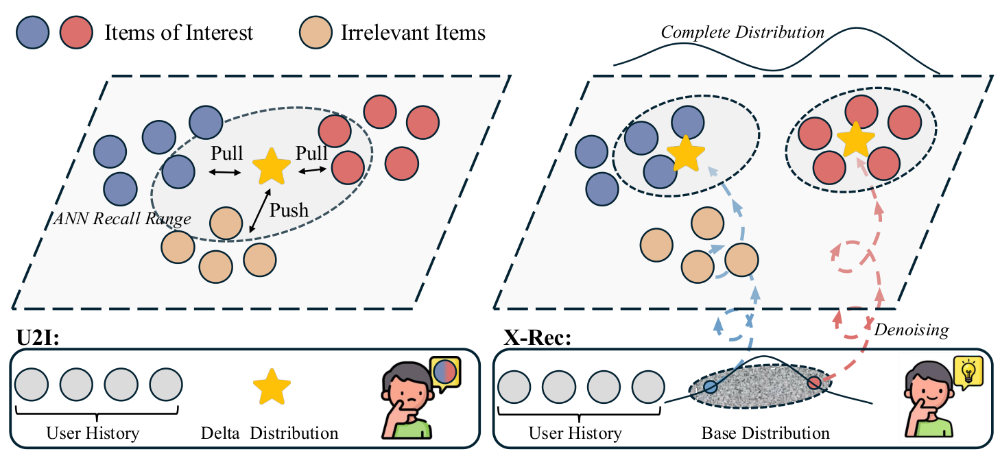
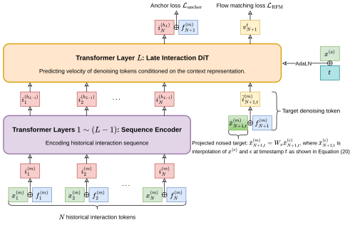
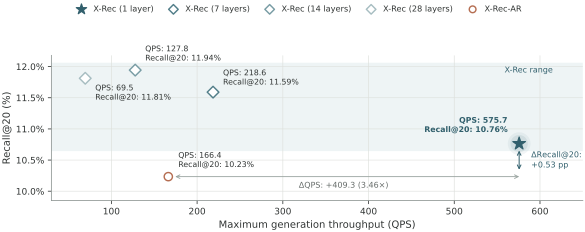

召回阶段的双塔（U2I）模型把一个用户压成一个向量，测试时等于假设用户兴趣只有一个点；语义 ID 自回归（SID-AR）模型能生成多个候选，但物品要先量化成离散编码，还要逐个 token 解码。TikTok 这篇 X-Rec 技术报告的做法是：在连续的物品向量空间里用流匹配（flow matching）直接生成 K 个向量，每个向量作为一个触发点去 ANN 索引里查近邻。具体有三个设计：先预测目标落在哪个聚类中心（锚点），再在单位超球面上沿测地线去噪，去噪时只重跑 Transformer 的最后一层。在 TikTok 的 47 个分区流式基准上，X-Rec 的平均 Recall@20 是 10.76%，比同配置的 SID-AR 变体高 0.53 个百分点，生成吞吐是它的 3.46 倍（575.7 对 166.4 QPS）。精度只是略高，真正拉开差距的是吞吐：20 个触发点在去噪时并行生成，不需要逐 token 解码。X-Rec 已作为一路新召回源在 TikTok 某个垂类上线，两次 A/B 合计垂类互动提升 4.1484%。
1. 现有两类召回的问题

作者先把两类方法放在“建模哪个分布”的框架下比较。U2I 训练时是对采样负例的分类，测试时只输出一个向量，相当于一个 delta 分布；用户同时喜欢汽车和做饭视频时，这个向量容易落在两个兴趣中间。SID-AR（如 TIGER）建模的是离散 SID 上的分布，能采样出多个候选，但有两个代价：一是量化误差，本文 4 层 4096 码本的残差量化，重建余弦相似度是 0.94，而且 SID 和物品 ID 不是一一对应，需要额外的哈希 token；二是生成 K 个候选要逐 token 解码，时间复杂度是 $O(N(N+KM))$， 是 SID 长度。
X-Rec 建模的是连续向量空间上的完整分布，物品向量直接作为训练目标，不经过量化。
2. 方法

2.1 锚点条件：先选区域再细化
作者把物品向量做聚类，每个物品的锚点 就是它所属的聚类中心编号。模型先用一个 softmax 分类器预测锚点，输入是序列最后位置的隐状态加上目标属性向量，用交叉熵 训练；之后的去噪以采样到的锚点为条件。推理时锚点的采样温度可以调节触发点的多样性，默认 1.4。
2.2 超球面上的流匹配（RFM）
物品向量都做了 L2 归一化，合法的触发点应该在单位超球面上。普通的欧氏流匹配在噪声和目标之间走直线，中途会离开球面。RFM 改为沿测地线插值，速度场也取测地线的导数，损失是：
其中 是噪声 和目标向量 之间的测地距离。网络输出的速度还要减去沿当前点方向的分量，只保留切空间部分。总损失是 。推理时从球面均匀分布采样起点，用黎曼欧拉法走 30 步，CFG 引导系数 3.0。
2.3 Late Interaction DiT：去噪只跑最后一层
主干是去掉词嵌入层后约 0.46B 参数的 Qwen3-0.6B。历史序列用因果掩码编码，前 L−1 层算一次并缓存 KV；加噪的目标 token 只插入最后一层，和缓存的历史表示做注意力，输出速度。这样 30 步去噪每一步只重算一层。20 个触发点对应 20 个互不可见的去噪 token，可以在同一批里并行算。
训练分预训练和 SFT 两段。预训练时一条序列的每个位置都是一个“前缀→下一个物品”样本，作者设计了专门的注意力掩码，让每个去噪 token 只看自己的前缀，一次前向就能算完整条序列的损失。SFT 时把长期正反馈序列和近期行为序列拼起来作为条件，每个目标采 8 组噪声和时间步。
3. 实验
3.1 主结果
基准由 TikTok 日志构建，共 47 个连续分区，每个分区 2.6M 条训练样本和 10K 条测试样本，模型按分区顺序持续训练和评测，模拟线上的增量更新。Recall@20 默认是 20×1 设置（20 个触发点各取 1 个最近邻）；只能出一个向量的 U2I 方法用 1×20。SID 方法生成的 SID 经码本解码成向量后走同一套 ANN 评测。X-Rec-U2I 和 X-Rec-AR 是作者用同一编码器配置做的对照变体。下表是论文附录 Table 4、Table 5 中 47 个分区的均值（均值由我们按表中逐分区数字计算，X-Rec 和两个变体的 Recall@20 与论文正文、Figure 6 一致）：
| 方法 | 类型 | Recall@20 (%) | Recall@50 (%) |
|---|---|---|---|
| X-Rec | 连续流匹配 | 10.76 | 12.70 |
| X-Rec-AR | SID 自回归 | 10.23 | 13.29 |
| X-Rec-U2I | 双塔 | 6.98 | 9.68 |
| LATTE | SID | 6.83 | 8.64 |
| LLaDARec | SID 离散扩散 | 6.53 | 7.73 |
| TIGER | SID | 5.21 | 7.00 |
| EAGER | SID | 4.93 | 6.84 |
| DreamRec | 扩散（单向量） | 4.30 | 4.53 |
| LRURec | 序列 U2I | 1.19 | 2.18 |
| SASRec | 序列 U2I | 1.03 | 1.90 |
X-Rec 比 X-Rec-U2I 高 3.78 个百分点，说明多触发点比单向量更能覆盖多种兴趣。和 X-Rec-AR 相比，Recall@20 高 0.53 个百分点；但到了 Recall@50，X-Rec-AR 反而更高。两者的分布建模能力接近，X-Rec 的优势主要在吞吐而不在召回率。
3.2 消融
这组实验逐个去掉三个设计和预训练，看 Recall@20 的变化：
| 变体 | Recall@20 (%) |
|---|---|
| X-Rec（完整） | 10.76 |
| 去掉锚点条件 | 8.71 |
| RFM 换成欧氏流匹配 | 8.98 |
| 不做预训练 | 5.49 |
三项在 47 个分区上都是完整模型更高。锚点的作用可以从另一个角度看：把生成的触发点量化回 SID，第一位 SID 的 Recall@20 从 28.57% 升到 41.37%（论文 Table 2），说明锚点主要帮模型找对了粗粒度区域。
3.3 去噪层数与吞吐

这组实验把去噪层数 L′ 从 1 增加到 7、14、28，去噪步数固定 30 步，每个请求的条件序列长 199、生成 20 个触发点。14 层的 Recall@20 最高，为 11.94%；28 层降到 11.81%。1 层的吞吐分别是 7、14、28 层的 2.63、4.50、8.28 倍。作者选 1 层，用约 1 个百分点的召回率换几倍的吞吐。
3.4 广度与量化损失
总候选数固定为 20 时，X-Rec 从 1×20 换到 20×1，Recall@20 从 8.28% 单调升到 10.76%，即触发点越多、每个触发点取的近邻越少，效果越好。多兴趣双塔 ComiRec 的变体正好相反，10×2 时只有 5.32%，触发点之间更分散（平均余弦 0.696，X-Rec 是 0.823），召回却更低。
作者还把 SFT 的训练目标换成 SID 解码后的重建向量，Recall@20 平均下降 2.13 个百分点，20×1 设置下降最多（3.10）。这是对“量化会丢信息”的直接验证。
3.5 线上 A/B
X-Rec 作为一路新召回源上线 TikTok 某个垂类内容推荐，分两次（论文 Table 3）：
| 指标 | V1（无锚点） | V2（加锚点） | 合计 |
|---|---|---|---|
| 垂类互动 | +2.3779% | +1.7705% | +4.1484% |
| 大盘互动 | 不显著 | +0.0111% | +0.0111% |
V2 以 V1 为对照，所以两次增益可以相加。
4. 局限
作者在结论里写了三点待解决的问题：采样需要多步去噪，要靠少步蒸馏、自适应求解器等降低线上成本；late interaction 换到更大的主干上效果如何还没有验证；目前只有监督训练，没有做面向长期满意度的强化学习后训练。
另外两点需要注意。第一，附录 Table 5 中，Recall@50 在 47 个分区里 X-Rec 只有 14 个高于 X-Rec-AR，均值也更低，“优于 SID-AR”只在 Recall@20 上成立。第二，正文几处数字和图表对不上：4.2 节写 X-Rec 平均 10.65%，而消融、Figure 6 和附录均值都是 10.76%；14 层比 1 层高“1.05 个百分点”，按 Figure 6 的数字是 1.18。
5. 实践意义
一是已有向量 ANN 召回的团队，可以直接用现有物品向量和索引试这条路线：模型只负责生成查询向量，索引和物品侧不用改，也不用建 SID 码本。
二是如果要用生成式模型做多兴趣召回，可以先测两件事：在固定候选数下，多个触发点是否真的比单向量多取近邻效果更好（本文 1×20 到 20×1 提升 2.48 个百分点）；以及只重跑最后一层能否满足吞吐预算。